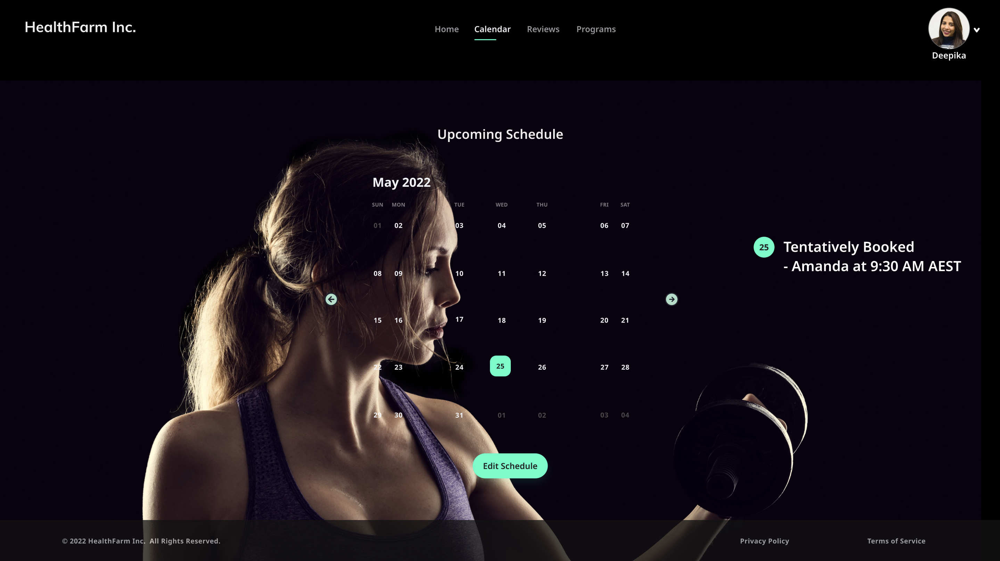

Health Farm Inc. Project
Project Overview
As part of the Systems Analysis and Design unit project, our group was tasked with producing a comprehensive set of systems design outputs for Health Farm Inc. Health Farm Inc. required a sophisticated system to manage their growing business needs. The platform needed to facilitate user access to fitness programs, instructor information, and member management while also providing a seamless interface for new and existing customers.With a focus on UML design techniques, the project was segmented into the creation of design models and a mock-up prototype.
Key Functionalities
- Instructor Discovery: A detailed search function to connect members with the right fitness professionals.
- Fitness Program Locator: An easy-to-navigate system for members to find and book fitness sessions.
- Session Booking System: A real-time booking feature that updates instructor schedules automatically.
- Member Registration and Management: A streamlined process for new members to join and manage their profiles.
My Role in the Project
Among the various responsibilities shared within our team, my specific role was centered on the development of the mock-up prototype. This prototype was designed to showcase the user interface for two key functionalities of the proposed website: "Instructor Discovery" and "Session Booking System."
Prototype Design
Utilizing tools such as Adobe XD, I crafted an interactive representation of the user interface that emphasized:
User Experience: I aimed to create a prototype that would not only meet the functional requirements but also provide a seamless and intuitive user experience.
Visual Design: The prototype was developed with a focus on visual appeal, aligning with Health Farm Inc.'s branding and the aesthetic expectations of their clientele.
Prototype

Outcome
The prototype was well-received by our instructors, demonstrating my ability to tackle complex system design challenges effectively. This project honed my skills in prototype design.